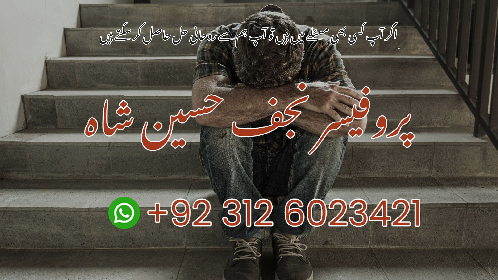

Divorce is one of the most difficult and emotionally draining decisions a couple can face. Misunderstandings, lack of communication, external pressure, or emotional distance can lead to serious strain in a marriage. In many cases, couples or family members seek peaceful solutions before taking such a final step. If handled with care, respect, and spiritual reflection, many marriage-related problems can be addressed and resolved. Spiritual guidance can offer clarity, emotional support, and a fresh perspective when all other ways seem blocked.
Professor Syed Sikandar Shah Hashmi provides confidential spiritual consultation for individuals and couples going through marital conflict or divorce-related stress. Through Istikhara, dua (supplication), and rohani mashwara (spiritual advice), he helps clients explore solutions rooted in patience and faith. This service does not involve any false claims — it is a respectful way to seek peace and healing during a painful time. All matters are kept strictly private, and online consultations are available via WhatsApp or phone for those who cannot meet in person.